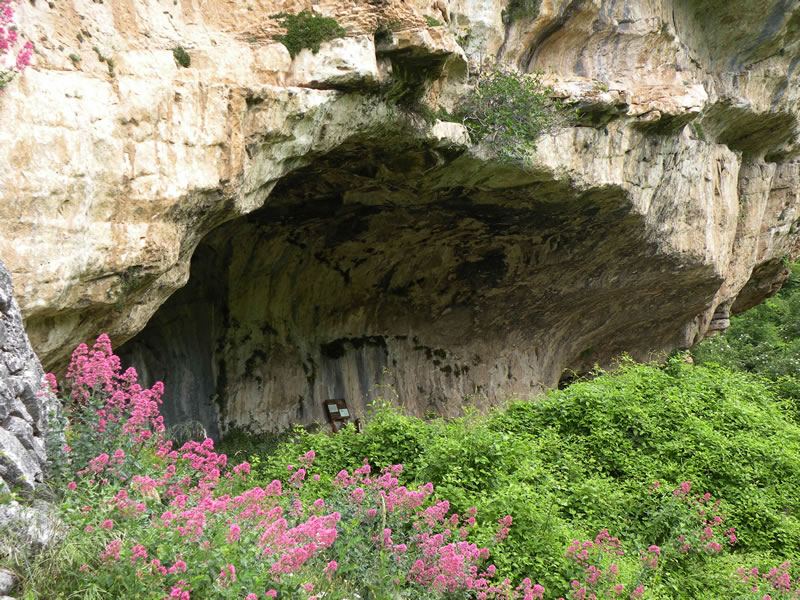
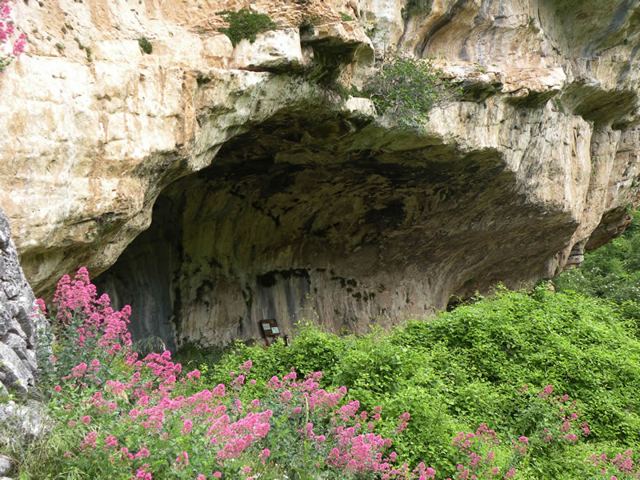
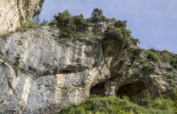
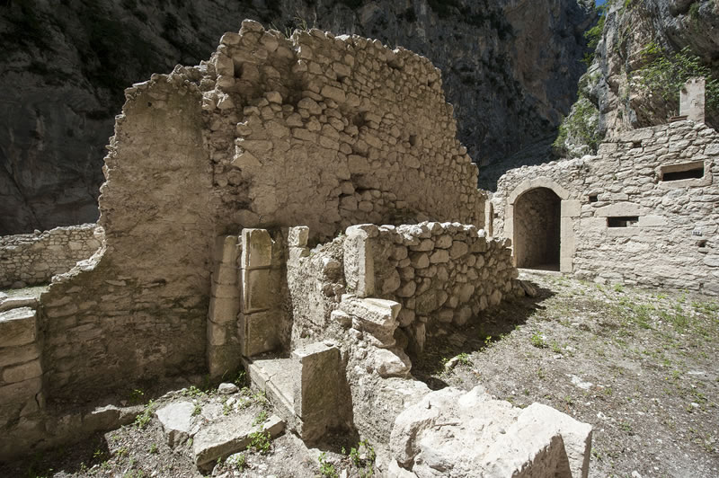
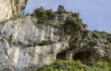
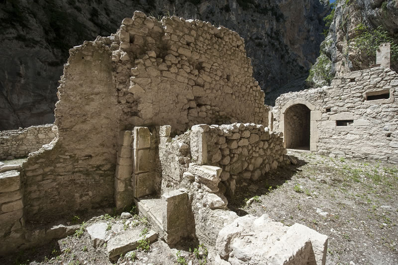

Storia
Paleolitico e Neolitico
La Majella, oltre che di natura selvaggia, è straordinariamente ricca di testimonianze storiche, archeologiche e architettoniche. In effetti è sempre stata abitata, sin dal Paleolitico 800.000 anni fa.
Compaiono dapprima dell’Homo erectus, nel Paleolitico inferiore, e poi il sapiens neanderthalensis, nel Paleolitico medio.
Intorno a 35.000 anni fa compare il sapiens sapiens, che segna l’inizio del Paleolitico superiore.
È questo il lungo periodo del cacciatore raccoglitore, organizzato in piccole bande che utilizzavano le risorse naturali della montagna per procurarsi cibo, attraverso la raccolta dei prodotti spontanei e la caccia dei grandi mammiferi; utilizzavano anche materiali naturali, come la selce, per ricavare degli strumenti.
Ricche testimonianze di questo vasto periodo sono state rinvenute negli importanti siti di Valle Giumentina,Grotta degli Orsi e Grotta del Colle.
Nel Neolitico (dai 6600 ai 4500/4000 anni orsono), giunsero dall’area balcanica le popolazioni portatrici dell’agricoltura; ci fu certamente una fusione con i cacciatori e raccoglitori dell’epoca precedente.
Cambiarono soprattutto le forme di insediamento: non più in grotta, ma "in villaggi all’aperto formati da capanne impostate a fior di terra, mentre le grotte passarono ad essere luogo di sepoltura per defunti e per eseguire riti e cerimonie sacre". Insieme con l’agricoltura questa popolazione sviluppò anche l’allevamento, ma di tipo stanziale, che si distingue dalla vera e propria pastorizia.
 

Longobardi
L’invasione dei Longobardi (568 d.C.) investì l’Abruzzo, cerniera fra il Ducato di Spoleto e il Ducato di Benevento. Numerosi sono i toponimi longobardi nell’area majellese come fara e sala.
Capillare fu la diffusione del culto (in grotta) di san Michele Arcangelo, il santo guerriero scelto come protettore dai Longobardi convertiti. Alla fine del secolo VIII alla dominazione longobarda si sovrappose quella dei Franchi (Chieti fu conquistata nell’801).
Nell’età longobardo-franca sorgono le abbazie benedettine di San Vincenzo al Volturno e di San Clemente a Casauria che per vari secoli, insieme a Montecassino, costituiscono poli di riferimento nelle vicende del territorio della Majella e dell’area circostante. San Clemente, fondata nell’anno 871 dall’imperatore Ludovico II, è a diretto contatto con le pendici settentrionali del massiccio.
La rete di monasteri che dal secolo IX si stende su questo territorio fa capo nella maggior parte dei casi alle tre abbazie benedettine sopra menzionate. Tra le fondazioni più antiche sono: San Liberatore a Maiella (Serramonacesca), dipendenza cassinese; San Salvatore a Maiella (Rapino), esistente alla fine del secolo X e forse di origine autoctona. Al secolo IX risalgono San Martino in Valle (Fara San Martino), San Nicola di Coccia (Palena) e la chiesa di San Leopardo (Pacentro).
 


